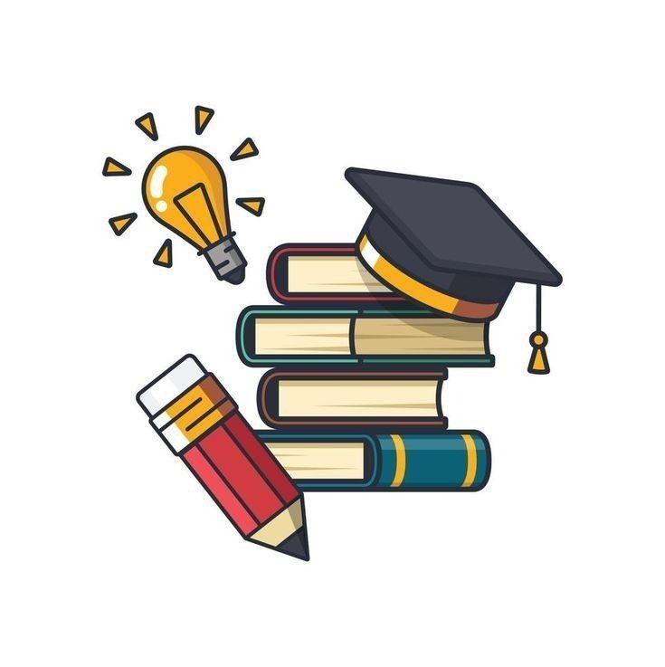
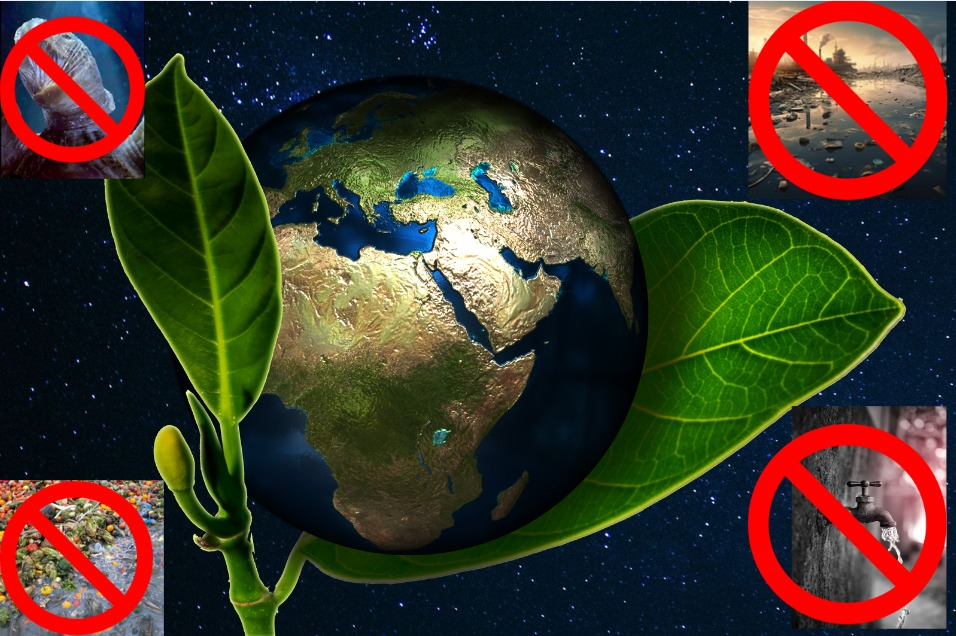

¿Cómo quieres aprender hoy?
🌿 ¿Qué es la sostenibilidad?
La sostenibilidad ambiental implica usar los recursos naturales de forma responsable, para que las generaciones presentes satisfagan sus necesidades sin comprometer las de las futuras.
🌳 Ambiental
Protege ecosistemas, cuida la biodiversidad y mejora la calidad del aire, el agua y los suelos.
🤝 Social
Promueve justicia, equidad y comunidades saludables donde todos tengan oportunidades.
💰 Económica
Apoya modelos de crecimiento que no degraden el ambiente ni agoten los recursos naturales.
🎯 LOS DAÑOS QUE PUEDE SUFRIR EL MEDIO AMBIENTE Y CÓMO PODEMOS EVITARLOS Y REVERTIRLOS
El medio ambiente es el hogar que compartimos con millones de especies. Es el bosque que respira por nosotros, el río que nos hidrata, el suelo que alimenta nuestras cosechas y el aire que sostiene nuestra vida. Sin embargo, el planeta no está bien. Durante décadas, la humanidad ha hecho uso de la naturaleza sin detenerse a pensar en las consecuencias: más industrias, más consumo, más desechos, más contaminación. Este crecimiento rápido, desordenado y poco sostenible ha puesto en riesgo la salud de la Tierra y, con ello, la nuestra. vamos a ver cuales son los daños principales que hacemos al medio ambiente como se origina, sus efectos y como repararlo juntos:
- 🔥 Cambio climático: la emergencia global
- ¿Por qué ocurre?
- Consecuencias
- ¿Qué podemos hacer?
- 🌦️ Contaminación del aire: una amenaza invisible pero letal
- ¿Cómo se produce?
- Consecuencias
- ¿Cómo evitarlo y mejorar la situación?
- 🐠 Contaminación del agua: la vida en peligro
- ¿Cómo se contamina el agua?
- Consecuencias
- ¿Cómo evitarlo y repararlo?
- 🌲 Deforestación: el planeta pierde sus pulmones
- Causas principales
- Consecuencias
- ¿Cómo evitarlo y revertirlo?
- ♻️ Residuos y basura: un problema que crece sin parar
- ¿Por qué ocurre?
- Consecuencias
- ¿Cómo reducirlo y mejorar?
El clima del planeta está cambiando a una velocidad nunca vista. Sequías, lluvias intensas, huracanes, incendios… Todo se está volviendo más extremo.
Exceso de CO₂ y gases de efecto invernadero.Deforestación,Expansión industrial sin control,Actividades humanas que alteran ecosistemas.
Aumento del nivel del mar,Pérdida de cultivos y alimentos,Extremos climáticos, olas de calor, tormentas violentas,Derretimiento de glaciares,Migración de especies y desplazamientos humanos.
Ahorrar energía: apagar luces y desconectar aparatos,Usar bicicleta o caminar más,Elegir productos locales y sostenibles,Plantar árboles, muchos árboles,Reducir el consumo de carne y productos procesados.
La contaminación del aire es uno de los problemas más serios, porque muchas veces no se ve, pero está ahí: en la niebla gris que cubre las ciudades, en el olor a humo, en los gases que salen de autos y fábricas, en el polvo que respiramos sin darnos cuenta.
Quema de combustibles como gasolina, diésel, carbón y petróleo,Fábricas que expulsan humo y sustancias químicas,Quema de basura en calles o patios,Humo de cigarrillo y aerosoles,Incendios forestales, muchas veces provocados.
Enfermedades respiratorias: asma, bronquitis, alergias,Menor calidad de vida en ciudades densamente pobladas,Aumento de gases de efecto invernadero, que provocan calentamiento global,Afectación de árboles, vegetación y cultivos.
Reducir el uso del carro: caminar, usar bicicleta, compartir transporte,Evitar quemas de basura o materiales,Cuidar el estado del vehículo para que no libere humo oscuro,Crear y proteger áreas verdes: un solo árbol puede absorber kilos de CO₂ al año,Promover energías renovables y electrodomésticos eficientes.
El agua es esencial para todo ser vivo, pero hoy ríos, mares y lagos sufren un daño constante. Residuos, químicos, plástico, petróleo… Todo termina flotando o hundido en el agua que debería estar limpia para peces, plantas y humanos.
Basura tirada en alcantarillas, playas, ríos o quebradas, Fábricas que vierten sustancias tóxicas sin tratamiento, Uso excesivo de jabones, aceites y detergentes, Derrames petroleros que destruyen ecosistemas,Agroquímicos usados en exceso en cultivos.
Muerte de peces, tortugas, aves y corales,Propagación de enfermedades y contaminación del agua potable,Alteración del equilibrio de los ecosistemas, Pérdida de biodiversidad marina.
No arrojar basura, aceites o restos químicos al agua,Participar en jornadas de limpieza de ríos, lagos o playas,Usar productos biodegradables, Cuidar el consumo: duchas más cortas, cerrar la llave al cepillarse, reparar fugas,Exigir protección de las fuentes hídricas locales.
Los bosques no solo son árboles; son el hogar de miles de especies y una fuente de vida. Sin embargo, cada año desaparecen millones de hectáreas, lo que afecta clima, animales y comunidades humanas.
Tala para ganadería o agricultura intensiva,Construcción sin planificación,Incendios provocados o irresponsables,Minería ilegal,Madera cortada y vendida sin permisos.
Pérdida de hábitats naturales,Extinción de animales y plantas,Sequías y cambios extremos de clima,Menor capacidad de absorber CO₂,Erosión del suelo y deslizamientos.
Sembrar árboles en escuelas, barrios y zonas rurales,Evitar el consumo de productos de madera sin certificación,Apoyar programas de reforestación y protección de áreas verdes,Evitar fogatas en áreas forestales,Promover agricultura sostenible.
El plástico, envases, empaques, botellas y restos que generamos diariamente han creado un problema gigante: toneladas y toneladas de basura sin tratamiento adecuado.
Uso de productos de un solo uso (plásticos, vasos, bolsas),Falta de reciclaje en hogares,Comprar más de lo necesario,Falta de cultura ambiental en ciudades.
Animales que mueren al ingerir plástico,Calles y espacios verdes contaminados,Acumulación de desechos en mares,Inundaciones por alcantarillas tapadas.
Separar residuos en tres categorías: reciclaje, orgánicos y basura,Llevar bolsa reutilizable y botella personal,Reusar envases, frascos y objetos útiles,Participar en rutas o puntos de reciclaje.
🤲 Acciones comunitarias
La sostenibilidad también se construye en comunidad. Participar en actividades colectivas fortalece el compromiso con el planeta y genera un cambio duradero.
🧹 Limpieza ambiental
Organiza jornadas para limpiar ríos, playas o parques junto a tu comunidad.
🌾 Huertos comunitarios
Promueven la agricultura urbana, el trabajo en equipo y la alimentación saludable.
🔧 Reutiliza y repara
Talleres para dar nueva vida a objetos, reducir residuos y fomentar la creatividad.
📚 Educación ambiental
🎥 Video educativo 1
🎥 Video educativo 2
🎥 Video educativo 3
🌼 Pequeños gestos con gran impacto
- 💡 Apaga luces y equipos cuando no los uses.
- 🚯 Evita plásticos de un solo uso.
- ♻️ Recicla y separa tus residuos correctamente.
- 🌳 Planta árboles o cuida espacios verdes.
- 🚲 Usa transporte activo o público.
¿Quieres seguir aprendiendo y estando al dia con lo que pasa en nuestra tierra?
ingresa a aqui
ponte al dia 🌱